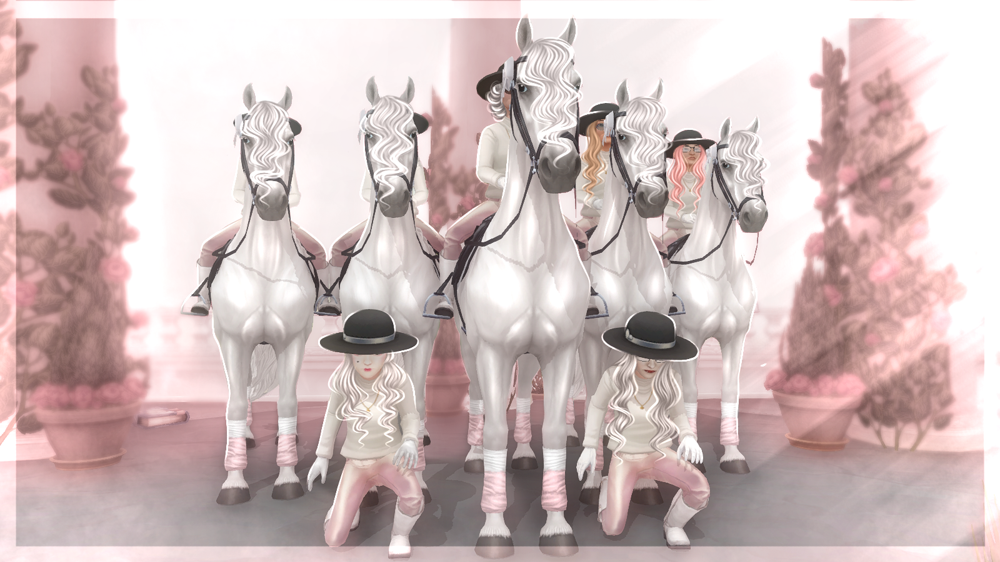
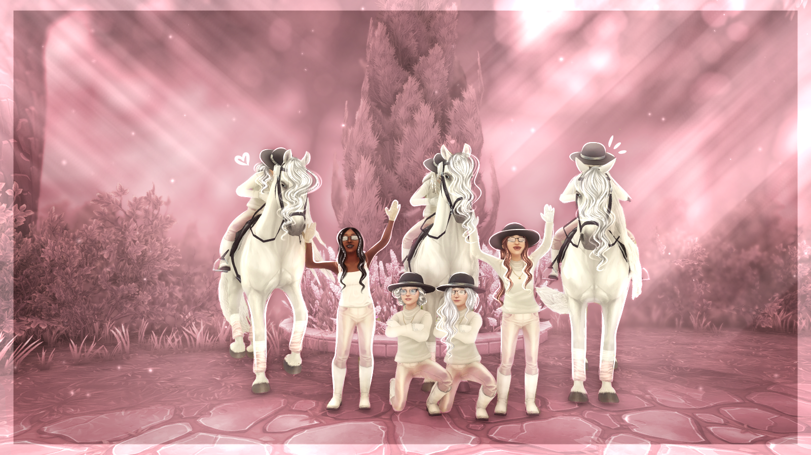
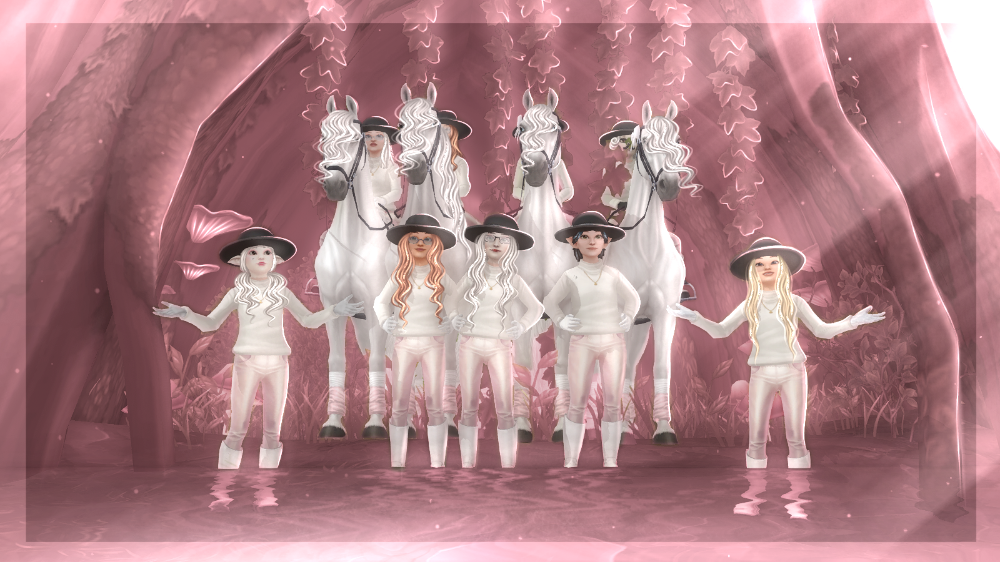

O Klubie Cloud Swans
Nasza Filozofia
Cloud Swans powstało 27 kwietnia 2025 roku na serwerze Emerald Forest. Jesteśmy klubem ujeżdżeniowym, który ceni sobie estetykę, zaangażowanie i przede wszystkim ciepłą, rodzinną atmosferę. Stawiamy na rozwój osobisty i klubowy, zapewniając zarówno zaplanowane treningi ujeżdżenia, jak i unikalne spotkania fabularne oraz integracyjne.
Włascicielką Cloud Swans jest Abbie Ghosthouse, znana jako Mira.
Spotkania

Klubowe spotkania, w tym treningi, sesje zdjęciowe i integracje, odbywają się wieczorami w weekendy. Dokładny, miesięczny plan jest zawsze dostępny na naszym serwerze Discord dla klubowiczów. Jesteśmy elastyczni i zawsze prosimy o usprawiedliwienia nieobecności.
Zarządzanie
W cloud swans zarząd skłąda się z 7 osób. Każdy z nich został starannie wyselekcjonowany, by miec pewność że jego mocne strony zostaną dobrze wykorzystane. Po za zarządem klubem zajmuje się dobrowolny Staff, który pomaga w dorbnych lub okazjonalnych zadanich. Klubowicze też bardzo często decydują o tym czego chcą oraz potrzebują. Dzięki takiej organizacji mamy pewność że cloud swans w 100% spełnia wymagania naszych klubowiczów. Słuchamy was.
"Wierzymy, że zaangażowanie każdego członka jest kluczowe, aby Cloud Swans mogło stać się elitarnym klubem."
Integracja i Atmosfera
Wiemy, że nawiązywanie nowych znajomości wymaga czasu. W Cloud Swans nikt nie będzie Cię zmuszał do kontaktowania się z innymi, jeśli nie czujesz się na to gotów. Zrobisz to we własnym tempie, gdy tylko poczujesz się swobodnie.
Organizujemy różnorodne spotkania – od pracy w mniejszych, bardziej intymnych grupach, po duże wydarzenia dla całego klubu. W naszym harmonogramie znajdziesz nie tylko treningi ujeżdżenia, ale także mnóstwo czasu na wspólną zabawę, integrację i swobodną rozmowę. Naszym celem jest stworzenie miejsca, gdzie każdy czuje się dobrze i ma szansę na znalezienie prawdziwych przyjaciół.
System Rang i Punktacja
W Cloud Swans posiadamy zaawansowany system rang, który docenia aktywność i zaangażowanie klubowiczów. Promocje do wyższych rang są oparte na regularnej obecności na spotkaniach, aktywności w klubie oraz ogólnym zaangażowaniu.
Nasz klub stawia na rozwój. Na start trafiasz do Grupy Kwiatków i Rangi Członek. Awansujesz dzięki punktom i umiejętnościom.
Grupy Ujeżdżenia:
- Grupa Kwiatków: Pierwsza styczność z ujeżdżeniem
- Grupa Chmurek: Początkująca
- Grupa Łabędzi: Średnio Zaawansowana
- Grupa Pegazów: Zaawansowana
- Grupa Królewska: Obejmuje osoby, które doskonale znają cały materiał ujeżdżenia i są wysoce zaawansowane.
Awans do następnej grupy następuje poprzez wypełnienie testu sprawdzającego wiedzę oraz własne obserwacje Trenerki lub właścicielki.